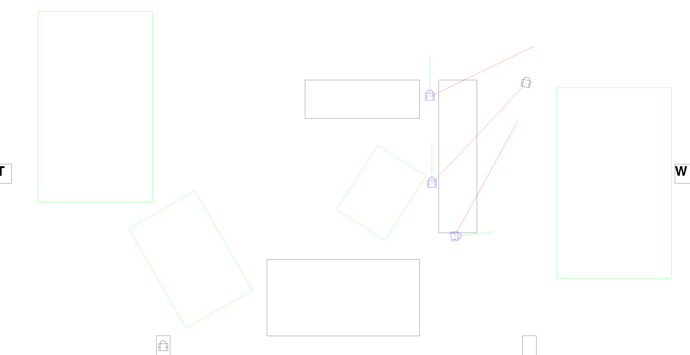
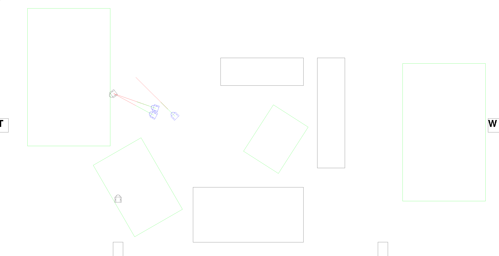

Car is a game for two players. Each player has to drive a car.
| Player 1 | Player 2 | Function |
|---|---|---|
| Curser-Up | W | Forward-Acceleration |
| Curser-Down | S | Backward-Acceleration |
| Curser-Left | A | Left-Turn |
| Curser-Right | D | Right-Turn |
| RShift | LShift | Brake |
| Return | LCtr | begin/end tunnel |
| RAlt | LAlt | begin/end to fuel^ |
| RAlt | LAlt | begin/end to repair^^ |
^ only at the fuel station; ^^ only at the repair station;
Don’t violate the speed limit, otherwise the car will be hunted of one police car after 10 sec driving 10% above the limit. The speed limit changes every minute.
:-).:-|.:-(.If the car stands for 30 sec, it loses a life.
The car has a maximum velocity (at beginning 240 km/h).
If the car is faster than the maximum velocity, the car loses stability.
The car maximum speed is relative to the stability:
m_state.stability = std::min((m_state.stability / max_stability) * 500_km_h, 240_km_h)Tif the car intersects with an other thing (e.g. the other car), the stability falls
if the stability equals zero, the car lose one life
the car can go to the repair station to repair itself
if the car will be repair, the player loses money
if the car wants to repair super much, that the stability is over the maximum stability, the car gets a life, and the stability will set on zero
if(m_state.stability > max_stability){
++m_state.life;
m_state.stability = m_state.stability - max_stability;
}a car can brake one second per brake-period, else the car lose stability.
the repair station is marked with a R
bool is_car_exploded(){ return m_state.life <= 0; }
void draw(){
...
if(is_car_exploded()){
return;
}
...
}a police car hunts a car, if the car collide on a house (black rectangles) or if the car drove 10 sec over 110% of the speed limit (100% + 10% <- tolerance).
the police car remebers the punishment, of the car:
const float punish = (std::abs(m_velocity) - max_velo)*10;const float punish = std::abs(m_velocity * 15);the police car drives under the speed limit, exept:
if(m_target->m_punish < 1000) {
addToVelocity(std::min({accel, m_state.max_car_velo - m_velocity, max_velo*0.9f - m_velocity}), dt);
} else if(m_target->m_punish < 5000) {
addToVelocity(std::min({accel, m_state.max_car_velo - m_velocity, max_velo*2.0f - m_velocity}), dt);
} else {
addToVelocity(std::min(accel, m_state.max_car_velo - m_velocity), dt);
}if a car collide with a house, three police cars comes:
point_t get_target_point() {
switch (m_id) {
case car_id_3: {
return m_target->m_rect_body.p_center;
}
case car_id_4: {
return m_target->m_rect_body.p_center + vec_t::from_length_angle( 10_m, m_target->m_angle);
}
case car_id_5: {
return m_target->m_rect_body.p_center + vec_t::from_length_angle(-10_m, m_target->m_angle);
}
default: break;
}
return {0, 0};
}
the red lines shows the difference (center to target point)
the green lines shows the velocity vector of police car
another example:

(perspective of a police car) if no police car with the next id has less than the threefold difference to the targetted car as I or I reached my target point, I get the next id
const int next_id = m_id < car_id_5 ? m_id + 1 : car_id_3;
if(m_id > car_id_3) {
if(m_aabbox.contains(target_point) && !m_target->m_state.digging_tunnel && !m_target->m_state.inTunnel) {
if(debug_prt) {
printf("Car %d -> %d!\n", m_id, next_id);
}
m_id = next_id;
return true;
}
bool go_one_id_over = true;
for(const Car_ref& AI_car : AI_cars) {
if(AI_car && m_target == AI_car->m_target && ((AI_car->m_id == next_id) || std::abs((AI_car->m_rect_body.p_center - m_target->m_rect_body.p_center).length()) * 3 <
std::abs((m_rect_body.p_center - m_target->m_rect_body.p_center).length()))) {
go_one_id_over = false;
break;
}
}
if(go_one_id_over) {
m_id = next_id;
}
}(perspective of a police car) if the penalty is over 100, I divide it through 3 and call a new police car to catch the targetted car with the next id
const int next_id = m_id < car_id_5 ? m_id + 1 : car_id_3;
if(m_punish > 100) {
m_punish /= 3;
make_police_car(next_id, m_punish*2, m_target);
}